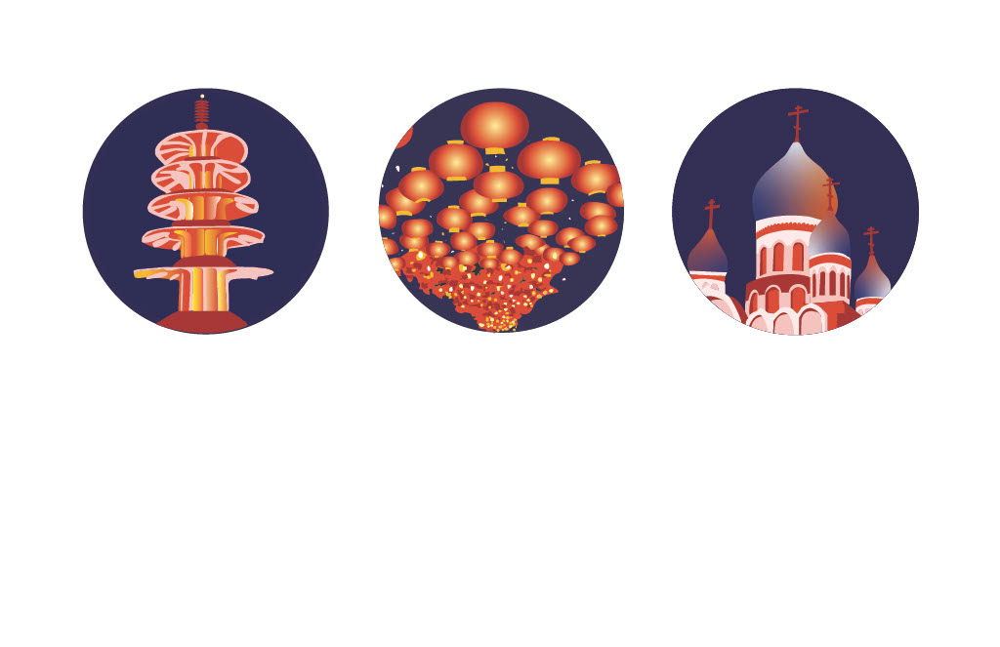

Sonia Goveas
san francisco icons
The goal of this project was to create three icons, representing three distinct neighborhoods of San Francisco. From left to right, the Peace Tower at Japantown, the lanterns in Chinatown, and the Holy Virgin Cathedral in the Richmond. I wanted to depict San Francisco at night, unifying the three icons. I addi
